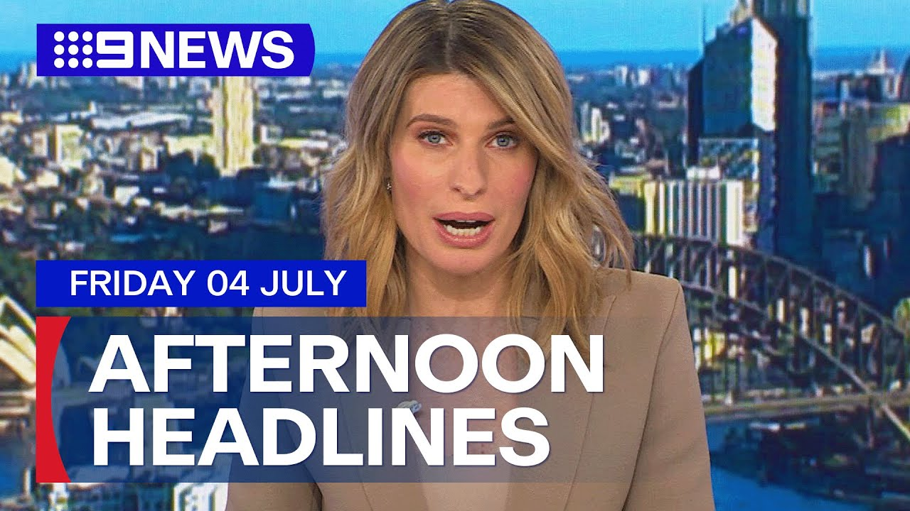

【澳洲新闻：两名青少年被控谋杀｜总理的经济愿景｜20250704】
Summary: Police investigate two deaths in a Sydney home, while teens are charged over a contract killing. The Prime Minister outlines economic plans, focusing on business growth.
摘要： 警方调查悉尼住宅两起死亡事件，两名青少年因雇凶杀人被起诉。总理阐述以商业增长为核心的经济计划。

⏱️ Estimated Reading Time: 14 min
📚 四级生词 📚 六级生词 📚 雅思生词 📚 托福生词 📚 专八生词 📚 SAT生词 📚 考研生词 📚 GRE生词 📚 高考生词 📚 其它生词生词
Good afternoon.
下午好。
We begin with the police investigation in our inner city after the bodies of two men were found in separate rooms of Assari Hills home.
我们从内城区的警方调查开始，两名男子的尸体在Assari Hills住宅的不同房间被发现。
Officers were called to the Cleveland Street address yesterday when they made the grim discovery.
昨天，警方接到Cleveland Street地址的报警后，发现了这一可怕现场。
Lots of police running around all day.
一整天都有大量警察四处奔走。
They were kind of jumping into the back of the house, so I didn't know what was going on.
他们像是冲进了房子后面，所以我当时不知道发生了什么。
It is believed the men aged in their 70s and 80s died at different times within the past month.
据信，这两名70多岁和80多岁的男子在过去一个月内不同时间死亡。
63-year-old woman who also lives at the home has been interviewed.
一名同样居住在该住宅的63岁女性已接受问询。
No charges have been laid.
目前尚未提出指控。
Two teenagers have been charged over what police believe was a contract killing in Sydney's West.
两名青少年因警方认定的悉尼西区雇凶杀人案被起诉。
Officers say they have no clear motive, but it's believed the victim, who was stabbed in a driveway, was not the intended target.
警方表示尚无明确动机，但认为在车道上被刺的受害者并非原定目标。
Bailey Kenzie has more.
Bailey Kenzie带来详细报道。
Well, Luke Manasseh was just 21 years old and aspiring entrepreneur and property economics graduate.
Luke Manasseh年仅21岁，是一名有抱负的企业家和房地产经济学毕业生。
Police say it was on the driveway of this Pemelway home behind me where he was murdered in what's now believed to be a case of mistaken identity.
警方称，他在我身后这栋Pemelway住宅的车道上遇害，目前认为是一起认错人的案件。
Under the cover of darkness, the rap discord came knocking.
在夜幕掩护下，暴力突然降临。
Police, that's why.
警方因此展开行动。
Coordinated raids across South Penraith, Mount Tarot in Woodcroft, arresting a 16 and 17-year-old.
警方在南Penraith、Woodcroft的Mount Tarot协调突袭，逮捕了一名16岁和一名17岁少年。
Police alleged they were contract killers, hired to carry out a violent murder, but detectives believe they got the wrong man.
警方指控他们是受雇实施暴力谋杀的杀手，但侦探认为他们杀错了人。
We believe that these young offenders were contracted by someone to conduct this killing.
我们相信这些年轻罪犯受雇于某人实施这起谋杀。
And it's probably too early at this stage to absolutely confirm that Luke was a mistaken identity, but that certainly heading towards that.
现阶段完全确认Luke被认错人为时尚早，但证据正指向这一结论。
The attack happened last Thursday, Driftway Drive.
袭击发生在上周四的Driftway Drive。
It was just before 11 o'clock when the 21-year-old was stabbed multiple times in the driveway.
当晚近11点，这名21岁男子在车道上被多次刺中。
The home he was attacked at belonged to Anthony Calil, a man well known to police.
他遇袭的住宅属于Anthony Calil，此人是警方的“熟客”。
He was one of seven men arrested in June after allegedly abducting a man over a debt of more than $2 million.
他曾在6月因涉嫌为200多万澳元债务绑架一名男子而被捕，是七名嫌疑人之一。
Police this afternoon investigating whether he was the intended target.
今天下午，警方正在调查他是否为原定目标。
It was absolutely intended to be murdered.
这绝对是一起蓄意谋杀。
I mean, you have two young persons armed with large knives who, via the embroidery attack, a male for no reason in the front of their premises.
两名持大刀的年轻人无故在其住所前袭击一名男性。
No, there's no question there.
毫无疑问。
The intention was to murder that person.
意图就是谋杀那个人。
In addition to the alleged getaway car police say they have now also seized hunting knives.
除据称的逃跑车辆外，警方还查获了猎刀。
The attack is being described by detectives as amateurish, but either way, this afternoon the family of Luke Manasseh is grieving.
侦探称此次袭击手法业余，但无论如何，Luke Manasseh的家人正沉浸在悲痛中。
Both boys arrested are well known to police.
被捕的两名少年均为警方熟知。
Both now behind bars and charged with murder.
两人现已被拘留并被控谋杀。
They didn't apply for bail when they fronted court this morning.
今早出庭时，他们未申请保释。
More than $3 million in cash and valuables has allegedly been stolen from at least 80 elderly Chinese women.
据称，至少80名华裔老年妇女被窃取超300万澳元现金和财物。
And what police say is a spiritual blessing scam.
警方称这是一场“祈福骗局”。
Officers claim Chinese nationals flew in and worked together to convince alleged victims their money and jewelry were cursed.
警方指控中国籍人员飞抵澳洲合作行骗，说服受害者其钱财和珠宝被诅咒。
They will convince them that it's been blessed, victim to opening those bags to find their money and jewelry is simply not in there.
他们谎称已“祈福”，受害者打开包后发现财物不翼而飞。
Last night, a 63-year-old woman was arrested at Sydney International Airport and charged with several offences relating to a scam allegedly targeting an elderly woman in Paramata.
昨晚，一名63岁女性在悉尼国际机场被捕，被控涉嫌针对Paramata一名老妇的多项诈骗罪名。
A car was slammed into an apartment building at Bondi.
一辆汽车撞入Bondi一栋公寓楼。
The driver of the car, a 40-year-old woman, suffered minor injuries in the crash last night on the corner of Francis Street and Ormond Street.
昨晚在Francis街与Ormond街拐角处，40岁的女司机在事故中受轻伤。
She was still in the car.
她当时仍在车内。
The car, the car, the bag said, obviously, it all gone off and she was just very distressed.
目击者称车辆失控，司机极度痛苦。
Tried to come her down, tried to make her sit down, but she was super erratic.
试图安抚她坐下，但她情绪极不稳定。
The driver was taken to St Vincent's Hospital for mandatory testing.
司机被送往圣文森特医院接受强制检测。
There was some disruption for commuters in Sydney this morning.
今早悉尼通勤者遭遇一些混乱。
The light rail coming to a halt at Randwick in the city's east when smoke was spotted coming from the roof of one of the carriages.
因一节车厢顶部冒烟，东区Randwick的轻轨暂停运行。
No one was injured.
无人受伤。
Quantice CEO Vanessa Hudson has gone on camera in Athens to comment on the hack of the airline three days ago, which is affected up to six million customers.
Quantice CEO Vanessa Hudson在雅典出镜，就三天前影响600万客户的航空公司数据泄露事件发表评论。
Mrs Hudson confirmed names, numbers and frequent fly numbers were accessed, but the airline is yet to be contacted by anyone claiming to have the data.
Hudson确认姓名、电话号码和常旅客号码被泄露，但尚未有人联系航空公司声称持有数据。
First and foremost, I'd like to apologise.
首先，我深表歉意。
What we will be able to tell customers next week is what specific data that pertains to them was potentially breached in this event.
下周我们将告知客户其哪些具体数据可能在此事件中泄露。
And so that is going to be something that we can continue to do is to communicate to our customers and support them through this process.
我们将持续与客户沟通并在此过程中提供支持。
No word from Quantice on any compensation for customers.
Quantice未提及客户赔偿事宜。
The Prime Minister has delivered a major speech in Sydney detailing the government's economic direction for its second term in office.
总理在悉尼发表重要讲话，详述政府第二任期的经济方向。
Let's go live to Canberra and Federal Politics reporter Amanda Cobb.
现在连线驻堪培拉的联邦政治记者Amanda Cobb。
Amanda, what were the key takeaways?
Amanda，有哪些要点？
Ali, the main message was really a focus on business.
Ali，核心信息是聚焦商业。
The Prime Minister saying his government wants to put business back at the heart of economic growth.
总理表示其政府希望让商业重回经济增长的核心。
How will he do that though?
但如何实现呢？
Well, there weren't really that many new concrete ideas in this speech.
此次演讲中并无太多具体新举措。
The Prime Minister alluding to cutting red tape and making it easier to do business, plus reforming the tax system and shaping government spending to encourage business growth.
总理提及削减繁文缛节、简化经商流程、改革税制及调整政府支出以促进商业增长。
In a strong, dynamic and productive economy, government should be a driver of growth, but not the driver of growth.
在强劲、活跃且高效的经济中，政府应是增长的推动者，而非主导者。
Our government wants you to be able to resume your right place as the primary source of growth in our economy.
本届政府希望企业能重归经济增长主要动力的应有地位。
The one big idea that many economists have been talking about is GST reform.
许多经济学家讨论的一大议题是GST改革。
That is increasing how much we pay on things we buy and lowering income taxes, but that idea was rejected by the PM.
即提高消费税、降低所得税，但总理否决了这一提议。
So I think we need to realign that and get more from the GST and less from income taxes, which hit working-age people that deter work that make it harder for people at that stage of buying a house.
我认为需重新调整，增加消费税收入、减少所得税，后者影响适龄工作者，抑制购房积极性。
A lot of these tax reform and business collaboration conversations will take place next month.
下月将展开多项税改与商业合作的讨论。
The government planning to host a productivity roundtable with the aim of bringing business, economists and governments into the same room and to work out the best way to get the economy moving faster.
政府计划举办生产力圆桌会议，集结商界、经济学家和政府共商加速经济的最佳方案。
Slow productivity though has been a problem in this country for years.
但生产力低下是该国多年顽疾。
So talking is all well and good, Ali, but the question remains on whether it's going to deliver results.
空谈无益，Ali，关键在于能否取得实效。
Thank you, Mr. Speaker, or politics reporter Amanda Coppin, Canberra.
谢谢议长——更正，政治记者Amanda Coppin于堪培拉报道。
Thank you, Amanda.
谢谢Amanda。
Well just a few months after announcing his first Australian tour in more than a decade, Asha has cancelled it.
Asha在宣布十余年来首场澳洲巡演仅数月后取消行程。
Ticketact telling customers that all dates on the past present future tour have been cancelled, including six in Sydney.
Ticketact通知客户“过去现在未来”巡演所有场次取消，含悉尼六场。
Tickets will be refunded in full within the next 30 business days.
门票将在30个工作日内全额退款。
There's been a major boost to emergency care in Sydney's Northwest, with the premiere today announcing a new ambulance station from Macquarie Park.
悉尼西北部急救服务大幅升级，州长今日宣布在Macquarie Park新建救护站。
The purpose-built facility at Cartoon Road is part of the state government's $615 million dollar program to deliver 30 new stations across New South Wales.
Cartoon Road的专用设施是新州政府6.15亿澳元计划的一部分，旨在全州新建30个救护站。
This is must have for a growing state like New South Wales.
对新州这样发展中的地区而言，这是必需品。
We need to be in a position where we're providing frontline health services for the people of New South Wales.
我们必须为新州民众提供一线医疗服务。
Construction is expected to begin next year.
工程预计明年动工。
President Donald Trump concedes he is struggling to make progress on a ceasefire between Russia and Ukraine, despite coming off a near hour long phone call with Vladimir Putin.
特朗普总统承认难在俄乌停火问题上取得进展，尽管刚结束与普京近一小时的电话。
US correspondent Reid Butler has more.
美国记者Reid Butler带来详细报道。
Well a long phone call and something you don't hear too often from the US President.
这是一通长时间通话，且内容罕见。
Donald Trump has admitted things aren't going his way when it comes to resolving the war in Ukraine.
特朗普承认在解决乌克兰战争问题上进展不顺。
He made these comments as he boarded Air Force One.
他在登上空军一号时发表了这些言论。
I'm not happy about that.
我对此不满意。
I'm not happy.
我不满意。
The call between Russian President Vladimir Putin and Donald Trump was described as Frank, but constructive Trump again said he needs a speedy resolution to the conflict with Ukraine, but according to the Kremlin Putin refuse saying Russia would not give up its goal of eliminating the root cause of this conflict.
俄总统普京与特朗普的通话被描述为坦率但具建设性。特朗普重申需尽快解决乌克兰冲突，但克里姆林宫称普京拒绝让步，表示俄不会放弃消除冲突根源的目标。
That's Russian shorthand essentially for the blocking of Western aid to Ukraine and also diminishing the country's sovereignty.
俄方实则是要阻止西方援乌并削弱其主权。
No, I didn't make any progress with them today at all.
不，我今天毫无进展。
It's frustrating for the President who famously claimed he could fix the war in Ukraine in one day after getting into office.
这对曾扬言上任后一天内解决乌战的总统而言颇为挫败。
It's now been six months, six phone calls with Putin and the war of course is still raging on.
如今六个月过去，六次与普京通话，战争仍在持续。
A glimmer of hope though, Putin did say in the call he'd be willing to negotiate further with Ukraine.
但一线希望是，普京在通话中表示愿与乌克兰进一步谈判。
Here is the Ukrainian President Vladimir Zelensky speaking in Denmark earlier.
以下是乌总统泽连斯基早前在丹麦的讲话。
We supported from the very beginning the idea of President Trump and conditionally ceasefire.
我们从一开始就支持特朗普总统的有条件停火提议。
I said it not once that we're ready for any kind of format of meeting.
我多次表示我们准备好任何形式的会谈。
Zelensky will have his chance to speak on the phone with Donald Trump tomorrow.
泽连斯基将于明日与特朗普通话。
A call is scheduled between the pair.
双方已安排通话。